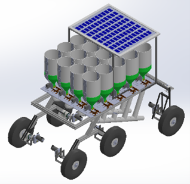
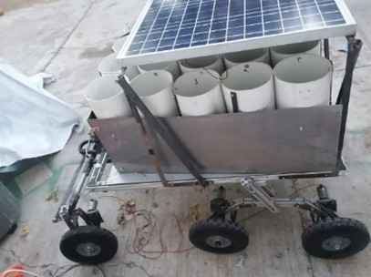
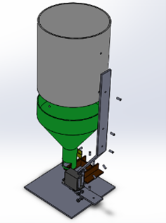
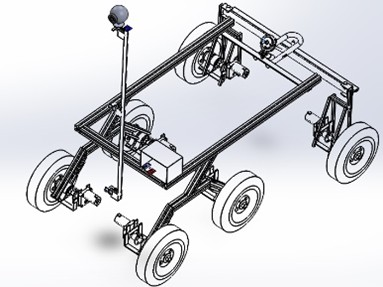

Mike: autonomous multi-species planting robot, using a database and GPS localization to determine the type of vegetation.
Research Project
Developed to help address deforestation issues in Mexico, in collaboration with two teammates, Misael Reséndiz and Ángel Enrique Vázquez. The project was presented in partnership with UNAM, CONACYT, and Intel ISEF.
Overview
A quarter of the world’s soils are degrading due to deforestation, overexploitation, and pollution, leading to the loss of fertile land and ecosystems. In Querétaro, Mexico, this issue is visible across its diverse vegetation zones.
To address this, we developed Mike an autonomous multi-species planting robot that uses a database and GPS localization to determine the right seed type for each location. The project aims to enable large-scale, intelligent reforestation and environmental restoration.


The images below show the 3D design and the final constructed prototype. The system is a rover-type robot designed to traverse obstacles, equipped with the capacity to carry up to 15 different types of seeds, a solar panel to support energy autonomy, and a GPS-guided control system powered by a Raspberry Pi.
Project Development and Results
The proposed project focused on designing and building an autonomous seeding robot capable of planting native species depending on the geographical region. The robot was designed to carry multiple seed types, using a rocker-bogie suspension system with DC actuators and solar panels, all controlled through an open-source software platform.
The system integrates multiple sensors to monitor current consumption, robot inclination, magnetic orientation, obstacle detection, displacement, acceleration, and circuit temperature. These readings are transmitted to the open-source platform. A database was developed to store vegetation coordinates across the state of Querétaro, allowing the robot to determine which species to plant based on its GPS position. In the gallery, the design of the seed dispenser, the mobile structure of the robot, and one of the trajectories completed during a planting test at our high school are presented. Finally, the gallery includes a photo of the team showcasing the project at the National Science Fair.
Gallery

